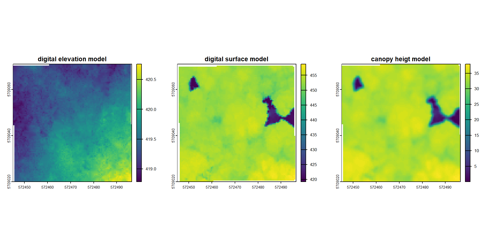
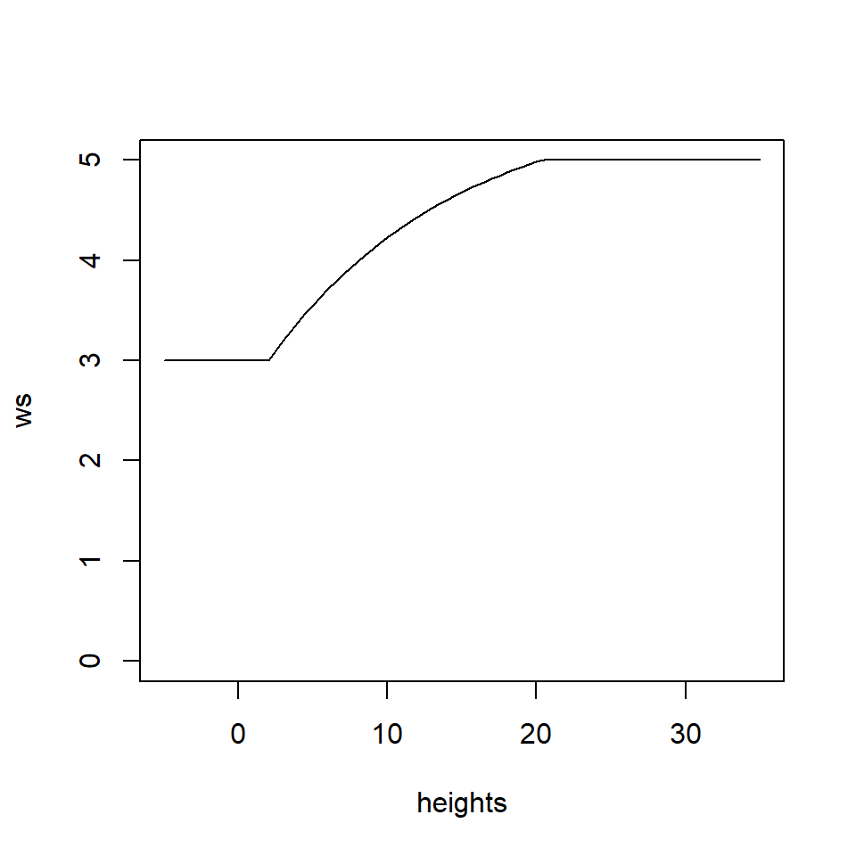
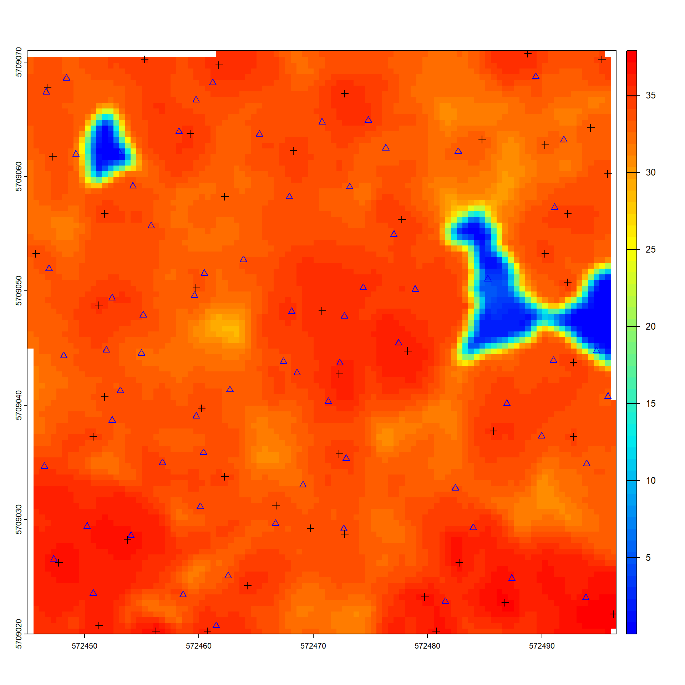
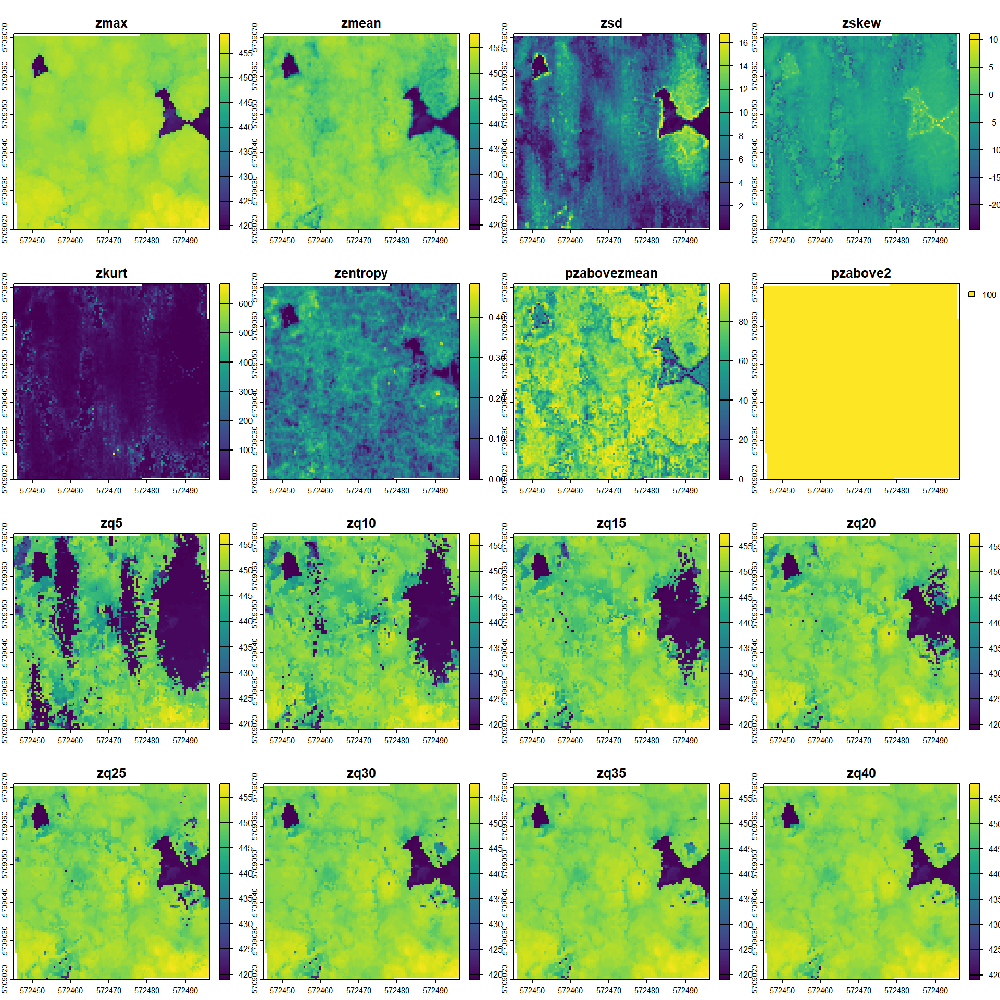
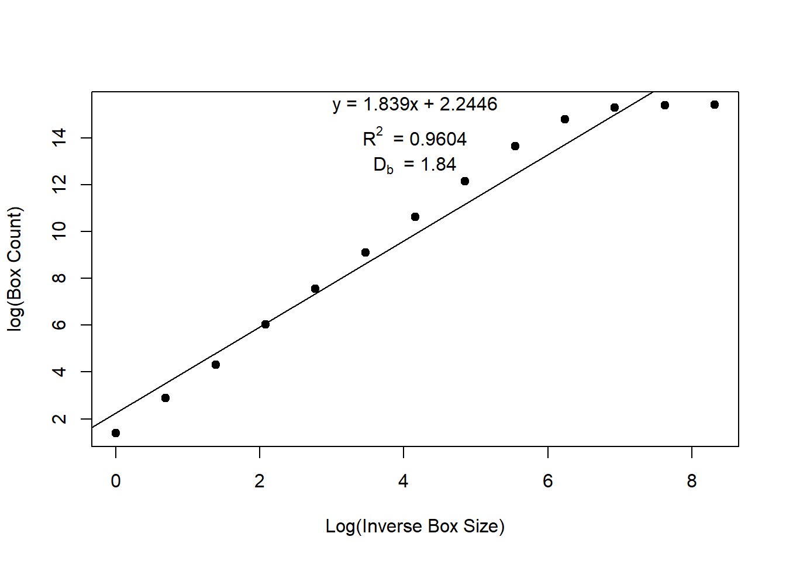

## install libraries
# install.packges("lidR")
# install.packages("terra")
# install.packages("sf")
# install.packages("rTwig")
# install.packages('lidRviewer', repos = c('https://r-lidar.r-universe.dev'))
library(lidR)
library(terra)
library(sf)
library(lidRviewer)
library(dplyr)
library(rTwig)Processing of 3D Lidar data to assess forest structure
check out the manual of the lidR package: https://r-lidar.github.io/lidRbook/
0. Setup
Install and load required libraries
download the data
download lidar point cloud and ground truth data (BI) from owncloud.
# Data access
url_las <- "https://cloud.hawk.de/index.php/s/pB4RRmLb4Xxy4Qj/download"
download.file(url_las, destfile = "uls_goewa.laz", mode = "wb")
url_bi <- "https://cloud.hawk.de/index.php/s/5npprfZYLjg5ip5/download"
download.file(url_bi, destfile = "trees_bi.gpkg", mode = "wb")import the data
las <- readLAS("uls_goewa.laz")
trees_bi <- st_read("trees_bi.gpkg")let´s inspect the data. 1) whats the point density of the lidar data? 2) whats the total number of points and pulses and what is the difference between the two? 3) is there any classification in the point cloud? 4) how many trees were measured in the BI? 5) which tree species are present in the plot?
print(las)class : LAS (v1.2 format 3)
memory : 313.2 Mb
extent : 572445.4, 572496.1, 5709020, 5709071 (xmin, xmax, ymin, ymax)
coord. ref. : WGS 84 / UTM zone 32N
area : 2602 m²
points : 5.13 million points
type : terrestrial
density : 1971.94 points/m²
density : 1660.17 pulses/m²plot(las)
print(trees_bi)Simple feature collection with 69 features and 17 fields
Geometry type: POINT
Dimension: XY
Bounding box: xmin: 572446.5 ymin: 5709021 xmax: 572495.8 ymax: 5709069
Projected CRS: WGS 84 / UTM zone 32N
First 10 features:
IDPlots Name Plots.Bem ID X_m Y_m Z_m Species Spec_txt
1 1 GoeWald Fla 1 <NA> 1 572468.6 5709043 -0.448 22 Bu
2 1 GoeWald Fla 1 <NA> 2 572467.4 5709044 -0.466 22 Bu
3 1 GoeWald Fla 1 <NA> 3 572462.7 5709041 -0.443 22 Bu
4 1 GoeWald Fla 1 <NA> 4 572459.8 5709039 -0.657 22 Bu
5 1 GoeWald Fla 1 <NA> 5 572455.0 5709045 -0.971 22 Bu
6 1 GoeWald Fla 1 <NA> 6 572455.1 5709048 -0.978 22 Bu
7 1 GoeWald Fla 1 <NA> 7 572459.6 5709050 -0.723 22 Bu
8 1 GoeWald Fla 1 <NA> 8 572460.5 5709052 -0.920 22 Bu
9 1 GoeWald Fla 1 <NA> 9 572463.9 5709053 -0.747 22 Bu
10 1 GoeWald Fla 1 <NA> 10 572468.1 5709048 -0.619 22 Bu
DBH_mm Vit Bruch Schirm Schiefer.B Trees.Bem x_lok y_lok
1 354 leb nein geringe �berschirmung Nein <NA> -2.197 -2.543
2 345 leb nein geringe �berschirmung Nein <NA> -3.371 -1.518
3 518 leb nein geringe �berschirmung Nein <NA> -8.087 -3.932
4 373 leb nein Hohe �berschirmung Nein <NA> -11.067 -6.176
5 350 leb nein Hohe �berschirmung Nein <NA> -15.776 -0.631
6 388 leb nein geringe �berschirmung Nein <NA> -15.576 2.703
7 264 tot ja <NA> Nein <NA> -11.070 4.367
8 404 leb nein geringe �berschirmung Nein <NA> -10.178 6.296
9 464 leb nein geringe �berschirmung Nein <NA> -6.741 7.432
10 291 leb ja Komplett �berschirmt Nein <NA> -2.589 2.832
geom
1 POINT (572468.6 5709043)
2 POINT (572467.4 5709044)
3 POINT (572462.7 5709041)
4 POINT (572459.8 5709039)
5 POINT (572455 5709045)
6 POINT (572455.1 5709048)
7 POINT (572459.6 5709050)
8 POINT (572460.5 5709052)
9 POINT (572463.9 5709053)
10 POINT (572468.1 5709048)1. Calculating Terrain Models
Next we are calculating terrain models, using triangulation (TIN = Triangulated Irregular Network). Since the data is already ground classified we can skip the classification step. The DEM is using the ground return points to interpolate the surface. In contrast, the digital surface model is using the highest lidar returns to represent the top of any object above the ground. Subtracting the two gives us the canopy height.
check out the documentation of the rasterize_terrain algorithm. Try out different interpolation algorithms and different resolutions. Compare the results visually.
dem <- rasterize_terrain(las, res = 0.5, algorithm = tin())
dsm <- rasterize_canopy(las, res = 0.5, algorithm = dsmtin(max_edge = 8))
chm <- dsm - dem
chm <- terra::focal(chm, w = 3, fun = mean, na.rm = TRUE) # smoothing results
par(mfrow = c(1,3))
plot(dem, main = "digital elevation model")
plot(dsm, main = "digital surface model")
plot(chm, main = "canopy heigt model")
#writeRaster(dem, "./data/output/dem.tif", overwrite=TRUE)
#writeRaster(dsm, "./data/output/dsm.tif", overwrite=TRUE)
#writeRaster(chm, "./data/output/chm.tif", overwrite=TRUE)2. Individual Tree Detection
Individual Tree Detection (ITD) is the process of spatially locating trees (f.i to extract height information). Tree tops can be detected by applying a Local Maximum Filter (LMF) on the loaded data set. The number of detected trees is correlated to the window size (ws) argument. Small windows sizes usually gives more trees, while large windows size generally miss smaller trees that are “hidden” by big trees that contain the highest points in the neighbourhood. We will use the Tree detection function with variable window size. Any points below 2 m will equate to a window size of 3 m, while points above 20 meters equate to a window size of 5 m. Anything between 2 and 20 meter will have a non-linear relationship.
## Function for Local Maximum Filter with variable windows size
f <- function(x) {
y <- 2.6 * (-(exp(-0.08*(x-2)) - 1)) + 3
# from https://r-lidar.github.io/lidRbook/itd.html
y[x < 2] <- 3
y[x > 20] <- 5
return(y)
}
heights <- seq(-5,35,0.5)
ws <- f(heights)
plot(heights, ws, type = "l", ylim = c(0,5))
Let´s run the tree detection algorithm using the user-defined ws function and the CHM created beforehand. Compare the results with the ground truth BI data. - How many of the trees could be detected in the lidar data?
- what could be the reasons for that?
#ttops <- locate_trees(las, lmf(f)) # only run this if you have a fast computer!
ttops <- locate_trees(chm, lmf(f))
# plot results
plot(chm, col = height.colors(50))
plot(sf::st_geometry(trees_bi), add = TRUE, pch = 2, col ="blue")
plot(sf::st_geometry(ttops), add = TRUE, pch = 3, col = "black")
# 3D plot
las_norm <- normalize_height(las, knnidw()) # normalize point cloud for this vizualisation Inverse distance weighting: [==================================----------------] 68% (6 threads)
Inverse distance weighting: [==================================----------------] 69% (6 threads)
Inverse distance weighting: [===================================---------------] 70% (6 threads)
Inverse distance weighting: [===================================---------------] 71% (6 threads)
Inverse distance weighting: [====================================--------------] 72% (6 threads)
Inverse distance weighting: [====================================--------------] 73% (6 threads)
Inverse distance weighting: [=====================================-------------] 74% (6 threads)
Inverse distance weighting: [=====================================-------------] 75% (6 threads)
Inverse distance weighting: [======================================------------] 76% (6 threads)
Inverse distance weighting: [======================================------------] 77% (6 threads)
Inverse distance weighting: [=======================================-----------] 78% (6 threads)
Inverse distance weighting: [=======================================-----------] 79% (6 threads)
Inverse distance weighting: [========================================----------] 80% (6 threads)
Inverse distance weighting: [========================================----------] 81% (6 threads)
Inverse distance weighting: [=========================================---------] 82% (6 threads)
Inverse distance weighting: [=========================================---------] 83% (6 threads)
Inverse distance weighting: [==========================================--------] 84% (6 threads)
Inverse distance weighting: [==========================================--------] 85% (6 threads)
Inverse distance weighting: [===========================================-------] 86% (6 threads)
Inverse distance weighting: [===========================================-------] 87% (6 threads)
Inverse distance weighting: [============================================------] 88% (6 threads)
Inverse distance weighting: [============================================------] 89% (6 threads)
Inverse distance weighting: [=============================================-----] 90% (6 threads)
Inverse distance weighting: [=============================================-----] 91% (6 threads)
Inverse distance weighting: [==============================================----] 92% (6 threads)
Inverse distance weighting: [==============================================----] 93% (6 threads)
Inverse distance weighting: [===============================================---] 94% (6 threads)
Inverse distance weighting: [===============================================---] 95% (6 threads)
Inverse distance weighting: [================================================--] 96% (6 threads)
Inverse distance weighting: [================================================--] 97% (6 threads)
Inverse distance weighting: [=================================================-] 98% (6 threads)
Inverse distance weighting: [=================================================-] 99% (6 threads)
Inverse distance weighting: [==================================================] 100% (6 threads)x <- plot(las_norm, bg = "white", size = 4)
add_treetops3d(x, ttops)
#writeVector(vect(ttops), "./data/output/ttops_chm_.gpkg", overwrite=TRUE)3. Individual Tree Segmentation
Individual Tree Segmentation (ITS) is the process of individually delineating detected trees. Even when the algorithm is raster-based (which is the case of dalponte2016()), lidR segments the point cloud and assigns an ID to each point by inserting a new attribute named treeID in the LAS object. This means that every point is associated with a particular tree.
algo <- dalponte2016(chm, ttops)
las_seg <- segment_trees(las_norm, algo) # segment point cloud
x <- plot(las_seg, bg = "white", size = 4, color = "treeID") # visualize trees
add_treetops3d(x, ttops)4. Deriving Metrics using the area-based approach
the Area-Based Approach (ABA) allows the creation of wall-to-wall predictions of forest inventory attributes (e.g. basal area or total volume per hectare) by linking ALS variables with field measured references.
r_metr <- pixel_metrics(las, res = 0.5, func = .stdmetrics)
plot(r_metr)
5.Forest structural complexity
(Fractal complexity analysis/ voxel-based box-count dimension or box dimension (Db) method)
The box dimension quantifies structural complexity of point clouds using a fractal box-counting approach.
It is defined as the slope of the regression between log box (voxel) count and log inverse box (voxel) size, with higher R² values indicating stronger self-similarity. Reliable estimates require high-resolution (≤1 cm) point clouds with minimal occlusion.
# Read data, check and pre-process with lidR
#data <- readLAS("uls_goewa.laz")
print(las)class : LAS (v1.2 format 3)
memory : 313.2 Mb
extent : 572445.4, 572496.1, 5709020, 5709071 (xmin, xmax, ymin, ymax)
coord. ref. : WGS 84 / UTM zone 32N
area : 2602 m²
points : 5.13 million points
type : terrestrial
density : 1971.94 points/m²
density : 1660.17 pulses/m²las_check(las)
Checking the data
- Checking coordinates...[0;32m ✓[0m
- Checking coordinates type...[0;32m ✓[0m
- Checking coordinates range...[0;32m ✓[0m
- Checking coordinates quantization...[0;32m ✓[0m
- Checking attributes type...[0;32m ✓[0m
- Checking ReturnNumber validity...[0;32m ✓[0m
- Checking NumberOfReturns validity...[0;32m ✓[0m
- Checking ReturnNumber vs. NumberOfReturns...[0;32m ✓[0m
- Checking RGB validity...[0;32m ✓[0m
- Checking absence of NAs...[0;32m ✓[0m
- Checking duplicated points...[0;32m ✓[0m
- Checking degenerated ground points...[0;32m ✓[0m
- Checking attribute population...
[0;32m 🛈 'PointSourceID' attribute is not populated[0m
[0;32m 🛈 'ScanDirectionFlag' attribute is not populated[0m
[0;32m 🛈 'EdgeOfFlightline' attribute is not populated[0m
- Checking gpstime incoherances[0;32m ✓[0m
- Checking flag attributes...[0;32m ✓[0m
- Checking user data attribute...[0;32m ✓[0m
Checking the header
- Checking header completeness...[0;32m ✓[0m
- Checking scale factor validity...[0;32m ✓[0m
- Checking point data format ID validity...[0;32m ✓[0m
- Checking extra bytes attributes validity...[0;32m ✓[0m
- Checking the bounding box validity...[0;32m ✓[0m
- Checking coordinate reference system...[0;32m ✓[0m
Checking header vs data adequacy
- Checking attributes vs. point format...[0;32m ✓[0m
- Checking header bbox vs. actual content...[0;32m ✓[0m
- Checking header number of points vs. actual content...[0;32m ✓[0m
- Checking header return number vs. actual content...[0;32m ✓[0m
Checking coordinate reference system...
- Checking if the CRS was understood by R...[0;32m ✓[0m
Checking preprocessing already done
- Checking ground classification...[0;32m yes[0m
- Checking normalization...[0;31m no[0m
- Checking negative outliers...[0;32m ✓[0m
- Checking flightline classification...[0;31m no[0m
Checking compression
- Checking attribute compression...
- ScanDirectionFlag is compressed
- EdgeOfFlightline is compressed
- Synthetic_flag is compressed
- Keypoint_flag is compressed
- Withheld_flag is compressed
- UserData is compressed
- PointSourceID is compressedlas_norm <- normalize_height(las = las,
algorithm = tin(),
use_class = 2)
las_check(las_norm) # check negative outliers
Checking the data
- Checking coordinates...[0;32m ✓[0m
- Checking coordinates type...[0;32m ✓[0m
- Checking coordinates range...[0;32m ✓[0m
- Checking coordinates quantization...[0;32m ✓[0m
- Checking attributes type...[0;32m ✓[0m
- Checking ReturnNumber validity...[0;32m ✓[0m
- Checking NumberOfReturns validity...[0;32m ✓[0m
- Checking ReturnNumber vs. NumberOfReturns...[0;32m ✓[0m
- Checking RGB validity...[0;32m ✓[0m
- Checking absence of NAs...[0;32m ✓[0m
- Checking duplicated points...[0;32m ✓[0m
- Checking degenerated ground points...[0;32m ✓[0m
- Checking attribute population...
[0;32m 🛈 'PointSourceID' attribute is not populated[0m
[0;32m 🛈 'ScanDirectionFlag' attribute is not populated[0m
[0;32m 🛈 'EdgeOfFlightline' attribute is not populated[0m
- Checking gpstime incoherances[0;32m ✓[0m
- Checking flag attributes...[0;32m ✓[0m
- Checking user data attribute...[0;32m ✓[0m
Checking the header
- Checking header completeness...[0;32m ✓[0m
- Checking scale factor validity...[0;32m ✓[0m
- Checking point data format ID validity...[0;32m ✓[0m
- Checking extra bytes attributes validity...[0;32m ✓[0m
- Checking the bounding box validity...[0;32m ✓[0m
- Checking coordinate reference system...[0;32m ✓[0m
Checking header vs data adequacy
- Checking attributes vs. point format...[0;32m ✓[0m
- Checking header bbox vs. actual content...[0;32m ✓[0m
- Checking header number of points vs. actual content...[0;32m ✓[0m
- Checking header return number vs. actual content...[0;32m ✓[0m
Checking coordinate reference system...
- Checking if the CRS was understood by R...[0;32m ✓[0m
Checking preprocessing already done
- Checking ground classification...[0;32m yes[0m
- Checking normalization...[0;32m yes[0m
- Checking negative outliers...
[1;33m ⚠ 51 points below 0[0m
- Checking flightline classification...[0;31m no[0m
Checking compression
- Checking attribute compression...
- ScanDirectionFlag is compressed
- EdgeOfFlightline is compressed
- Synthetic_flag is compressed
- Keypoint_flag is compressed
- Withheld_flag is compressed
- UserData is compressed
- PointSourceID is compressedview(las_norm)
#Rotate with left mouse button
#Zoom with mouse wheel
#Pan with right mouse button
#Keyboard r or g or b to color with RGB
#Keyboard z to color with Z
#Keyboard i to color with Intensity
#Keyboard c to color with Classification
#Keyboard + or - to change the point size
#Keyboard l to enable/disable eyes-dome lightninglas_norm@data[Z<0, 1:3] # Here options are either remove all or assign all to 0, However... X Y Z
<num> <num> <num>
1: 572471.7 5709038 -0.0183
2: 572469.0 5709021 -0.0044
3: 572475.5 5709041 -0.0315
4: 572477.3 5709041 -0.0004
5: 572475.2 5709040 -0.0013
6: 572476.9 5709041 -0.0088
7: 572459.1 5709064 -0.0035
8: 572477.3 5709041 -0.0041
9: 572460.3 5709058 -0.0034
10: 572458.5 5709062 -0.0015
11: 572462.5 5709046 -0.1952
12: 572480.8 5709064 -0.0056
13: 572483.4 5709069 -0.0163
14: 572483.8 5709068 -0.0514
15: 572483.8 5709068 -0.0330
16: 572483.4 5709068 -0.0129
17: 572488.9 5709023 -0.0133
18: 572476.2 5709047 -0.0031
19: 572451.9 5709020 -0.0029
20: 572483.6 5709068 -0.0488
21: 572484.9 5709062 -0.0040
22: 572452.1 5709020 -0.0102
23: 572452.0 5709021 -0.0030
24: 572488.8 5709054 -0.0037
25: 572476.1 5709032 -0.0070
26: 572452.2 5709020 -0.0227
27: 572491.1 5709069 -0.0163
28: 572488.9 5709023 -0.0496
29: 572483.9 5709068 -0.0246
30: 572483.4 5709068 -0.0099
31: 572484.7 5709063 -0.0017
32: 572477.9 5709064 -0.0101
33: 572478.2 5709065 -0.0129
34: 572482.9 5709060 -0.0112
35: 572494.0 5709053 -0.0001
36: 572491.3 5709055 -0.0017
37: 572476.1 5709047 -0.0046
38: 572475.6 5709050 -0.0004
39: 572491.0 5709039 -0.0019
40: 572473.3 5709046 -0.0006
41: 572478.1 5709039 -0.0100
42: 572493.1 5709032 -0.0122
43: 572470.5 5709037 -0.0157
44: 572490.8 5709032 -0.0080
45: 572477.5 5709041 -0.0002
46: 572474.1 5709035 -0.0131
47: 572493.0 5709032 -0.0166
48: 572477.7 5709040 -0.0088
49: 572476.5 5709052 -0.0075
50: 572473.1 5709038 -0.0014
51: 572474.0 5709035 -0.0297
X Y Z# Forest structural complexity (Box dimension)
cloud = las_norm@data[Z>0.5, 1:3] # Here, all points above 0.5 meter and only X,Y,z coordinates
db <- box_dimension(cloud = cloud,
lowercutoff = 0.01,
rm_int_box = FALSE,
plot = FALSE )
str(db)List of 2
$ :Classes 'tidytable', 'tbl', 'data.table' and 'data.frame': 13 obs. of 2 variables:
..$ log.box.size: num [1:13] 0 0.693 1.386 2.079 2.773 ...
..$ log.voxels : num [1:13] 1.39 2.89 4.32 6.04 7.56 ...
..- attr(*, ".internal.selfref")=<externalptr>
$ :Classes 'tidytable', 'tbl', 'data.table' and 'data.frame': 1 obs. of 4 variables:
..$ r.squared : num 0.964
..$ adj.r.squared: num 0.96
..$ intercept : num 2.24
..$ slope : num 1.84# Box Dimension (slope)
db[[2]]$slope[1] 1.838747db[[2]]$r.squared # show similarity[1] 0.9636752# Visualization
# 2D Plot
box_dimension(cloud[, 1:3], plot = "2D")
[[1]]
# A tidytable: 13 × 2
log.box.size log.voxels
<dbl> <dbl>
1 0 1.39
2 0.693 2.89
3 1.39 4.32
4 2.08 6.04
5 2.77 7.56
6 3.47 9.11
7 4.16 10.6
8 4.85 12.1
9 5.55 13.6
10 6.24 14.8
11 6.93 15.3
12 7.62 15.4
13 8.32 15.4
[[2]]
# A tidytable: 1 × 4
r.squared adj.r.squared intercept slope
<dbl> <dbl> <dbl> <dbl>
1 0.964 0.960 2.24 1.84# 3D Plot
box_dimension(cloud[, 1:3], plot = "3D")Panning plot on rgl device: 4[[1]]
# A tidytable: 13 × 2
log.box.size log.voxels
<dbl> <dbl>
1 0 1.39
2 0.693 2.89
3 1.39 4.32
4 2.08 6.04
5 2.77 7.56
6 3.47 9.11
7 4.16 10.6
8 4.85 12.1
9 5.55 13.6
10 6.24 14.8
11 6.93 15.3
12 7.62 15.4
13 8.32 15.4
[[2]]
# A tidytable: 1 × 4
r.squared adj.r.squared intercept slope
<dbl> <dbl> <dbl> <dbl>
1 0.964 0.960 2.24 1.84